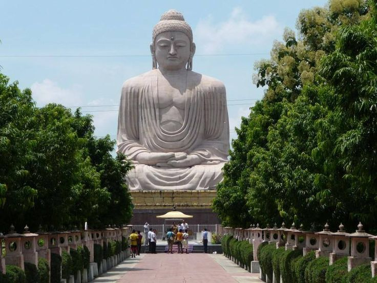

| Attraction | Best time to visit | Time Required | Key Points | Location |
|---|---|---|---|---|
| Bodh Gaya | Winter | 1 Days | It is now one of the UNESCO World Heritage Sites | View on Map |
| Valmiki National Park | Winter | 1-2 days | The only wildlife reserve in the state of Bihar | View on Map |
| Pawapuri, Nalanda | Spring | 3-4 Hours | Pawapuri is a holy site for the Jains | View on Map |
| Takhat Shri Harimandir Ji Patna Sahib | Evening | 4-5 Hours | Takhat Sri Harmandir Ji Patna Sahib, a major Sikh gurudwara and one of the five Takhts, located in Patna, Bihar | View on Map |
| Mandar Hill | Mansoon | 1 day | pilgrimage site with temples | View on Map |

Bodh Gaya
Bodh Gaya - The sacred town in Bihar where Buddha attained enlightenment under the Bodhi Tree. It is home to the Mahabodhi Temple, a UNESCO World Heritage Site, and attracts pilgrims and tourists from around the world. The town is peaceful, spiritual, and a center of Buddhist learning and meditation.
Read more
National Park, Bihar
Valmiki National Park – Located in West Champaran, Bihar, it is the only tiger reserve in the state. The park is part of the Valmiki Tiger Reserve and is known for its rich biodiversity, including tigers, leopards, elephants, and various bird species. It also features dense forests, rivers, and scenic landscapes, making it a perfect destination for wildlife enthusiasts and nature lovers.
Read more
Jain Mandi
Pawapuri Jain Mandir – Located in Nalanda district, Bihar, Pawapuri is a sacred Jain pilgrimage site. It is famous as the place where Lord Mahavira, the 24th Tirthankara, attained nirvana (liberation). The main attraction is the Pawapuri Jal Mandir, a beautiful temple built in the middle of a pond, surrounded by peaceful gardens. Pilgrims from all over India visit to pay their respects and experience the serene spiritual atmosphere.
Read more
Takhat Shri Harimandir Ji Patna Sahib
Harimandir Ji, Patna Sahib – Located in Patna, Bihar, it is one of the most sacred Sikh pilgrimage sites. The Gurudwara commemorates the birthplace of Guru Gobind Singh Ji, the tenth Sikh Guru. Famous for its beautiful architecture, golden domes, and spiritual significance, it attracts pilgrims and tourists from across India and the world.
Read more
Mandar Hill
Mandar Hill – Located in Banka district, Bihar, Mandar Hill is a historic and religious site famous in Hindu and Jain traditions. It is believed to be the place where Lord Krishna’s Samudra Manthan (churning of the ocean) took place in mythology. The hill is surrounded by temples, caves, and scenic views, making it a popular spot for pilgrims and nature lovers alike.
Read moreTravel Tips
- Respect and Behave well with local peoples.
- Talk to the locals and know the history of their culture.
- To maintain the natural beauty don't spread garbage.
- Always carry cash because in many hilly areas internet may not work properly.
GALLERY

Bihar